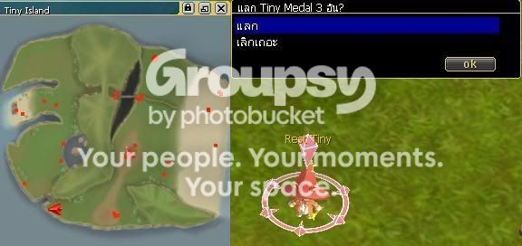

Invisible-sama- เขียน:คำถาม !!!
เมื่อไหร่จะได้ออกจากหลุมดำ ฟ่ะ ???
ตูโดนสูบไปตั้ง4ตัวยังมะรู้เลยเนี่ยจะรอดกลับมาได้มิ
http://eco.froztic.in.th/archive/ecofanclub/
http://eco.froztic.in.th/archive/ecofanclub/viewtopic.php?f=27&t=54621
Invisible-sama- เขียน:คำถาม !!!
เมื่อไหร่จะได้ออกจากหลุมดำ ฟ่ะ ???
Zillion เขียน:ต้องดึงของออกเท่านั้นหรอ
แก้ไขๆ รู้สึกว่าพอแม่ค้าไปสิงคนอื่นแล้วออกมา มันจะปิดร้านอัตโนมัตินะ
สกิล flame heart นี่ของอาชีพอะไรเหรอ

Zillion เขียน:ต้องดึงของออกเท่านั้นหรอ
แก้ไขๆ รู้สึกว่าพอแม่ค้าไปสิงคนอื่นแล้วออกมา มันจะปิดร้านอัตโนมัตินะ
สกิล flame heart นี่ของอาชีพอะไรเหรอ

krittakorn เขียน:ตอนนี้ในเกมส์มันมีเสื้อที่ใส่แล้ว+magไหมครับ
ขอเป็นแบบเพศ ญ ใส่ได้นะครับ
เพราะตัวที่บวกmagเป็นเสื้อรอยสักมันใส่ได้แต่ชาย
ผมคุ้นๆเหมือนเคยเจอว่ามันมีจากตั๋ว
แต่หลายวันมานี้พยายามกดหาตามตลาด
ไม่เจอเลย
รบกวนหน่อยครับว่ามันมีไหมถ้ามันมีแล้วมันคือเสื้ออะไร
เสื้อ+mag เพศหญิงใส่ได้
porpulation เขียน:เควสท์ ส่งคีตินให้ป้าขายสัตว์
ตอนนี้ป้าแกเปิดขายอะไรมั่งแล้วอะ(ของโมจินะคับ)


